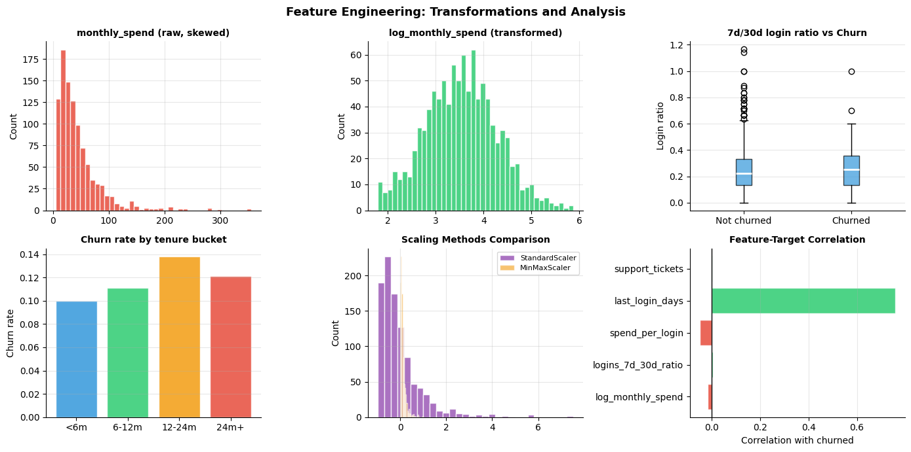
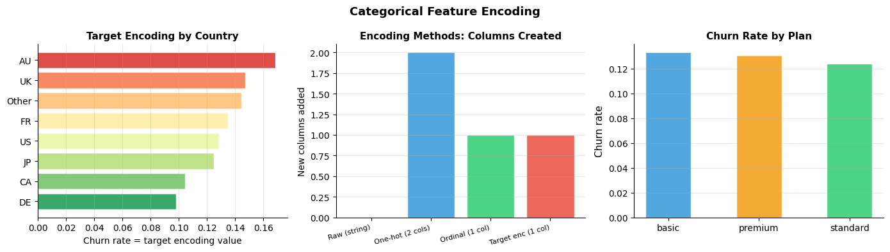
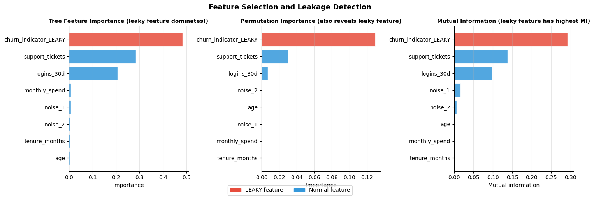

How do you build and prepare features?#
Topics: Feature Engineering Strategy · Numerical Features · Categorical Encoding · Feature Selection · Leakage Detection
1. Feature Engineering Strategy#
What it is#
Transform raw data into inputs that help models learn patterns
Domain knowledge first, then data-driven
Workflow#
Start with raw features — train a baseline
Identify gaps — what patterns is the model missing?
Engineer features — transform, combine, aggregate
Validate — does the new feature improve the model?
Document — feature definition, computation, business meaning
Gotchas#
More features is not always better — noisy features hurt models
Feature engineering must happen WITHIN CV folds — not on full data
Always check: could this feature leak future information?
import pandas as pd
import numpy as np
import matplotlib.pyplot as plt
from sklearn.preprocessing import StandardScaler, MinMaxScaler
import warnings
warnings.filterwarnings('ignore')
np.random.seed(42)
n = 1000
df = pd.DataFrame({
'user_id' : range(n),
'age' : np.random.randint(18, 70, n),
'tenure_months' : np.random.randint(1, 60, n),
'monthly_spend' : np.clip(np.random.lognormal(3.5, 0.8, n), 5, 1000).round(2),
'logins_7d' : np.random.poisson(3, n),
'logins_30d' : np.random.poisson(12, n),
'support_tickets': np.random.poisson(0.8, n),
'last_login_days': np.random.exponential(10, n).astype(int),
})
df['churned'] = (df['last_login_days'] > 20).astype(int)
# Numerical feature engineering
df['log_monthly_spend'] = np.log1p(df['monthly_spend'])
df['logins_7d_30d_ratio'] = df['logins_7d'] / (df['logins_30d'] + 1)
df['spend_per_login'] = df['monthly_spend'] / (df['logins_30d'] + 1)
df['tenure_bucket'] = pd.cut(df['tenure_months'],
bins=[0, 6, 12, 24, 60],
labels=['<6m', '6-12m', '12-24m', '24m+'])
print("Engineered features sample:")
cols = ['monthly_spend', 'log_monthly_spend', 'logins_7d_30d_ratio', 'spend_per_login']
print(df[cols].head(5).to_string())
fig, axes = plt.subplots(2, 3, figsize=(14, 7))
# Raw vs log-transformed
axes[0, 0].hist(df['monthly_spend'], bins=40, color='#E74C3C', alpha=0.85, edgecolor='white')
axes[0, 0].set_title('monthly_spend (raw, skewed)', fontsize=10, fontweight='bold')
axes[0, 0].set_ylabel('Count'); axes[0, 0].grid(True, alpha=0.3)
axes[0, 0].spines['top'].set_visible(False); axes[0, 0].spines['right'].set_visible(False)
axes[0, 1].hist(df['log_monthly_spend'], bins=40, color='#2ECC71', alpha=0.85, edgecolor='white')
axes[0, 1].set_title('log_monthly_spend (transformed)', fontsize=10, fontweight='bold')
axes[0, 1].set_ylabel('Count'); axes[0, 1].grid(True, alpha=0.3)
axes[0, 1].spines['top'].set_visible(False); axes[0, 1].spines['right'].set_visible(False)
# Ratio feature vs churn
c0 = df[df['churned'] == 0]['logins_7d_30d_ratio']
c1 = df[df['churned'] == 1]['logins_7d_30d_ratio']
axes[0, 2].boxplot([c0, c1], labels=['Not churned', 'Churned'],
patch_artist=True,
boxprops=dict(facecolor='#3498DB', alpha=0.7),
medianprops=dict(color='white', linewidth=2))
axes[0, 2].set_title('7d/30d login ratio vs Churn', fontsize=10, fontweight='bold')
axes[0, 2].set_ylabel('Login ratio'); axes[0, 2].grid(True, alpha=0.3, axis='y')
axes[0, 2].spines['top'].set_visible(False); axes[0, 2].spines['right'].set_visible(False)
# Tenure bucket churn
tenure_churn = df.groupby('tenure_bucket', observed=True)['churned'].mean()
axes[1, 0].bar(tenure_churn.index.astype(str), tenure_churn.values,
color=['#3498DB', '#2ECC71', '#F39C12', '#E74C3C'], alpha=0.85, edgecolor='white')
axes[1, 0].set_title('Churn rate by tenure bucket', fontsize=10, fontweight='bold')
axes[1, 0].set_ylabel('Churn rate'); axes[1, 0].grid(True, alpha=0.3, axis='y')
axes[1, 0].spines['top'].set_visible(False); axes[1, 0].spines['right'].set_visible(False)
# Scaling comparison
scaler_std = StandardScaler(); scaler_mm = MinMaxScaler()
x = df['monthly_spend'].values.reshape(-1, 1)
axes[1, 1].hist(scaler_std.fit_transform(x).ravel(), bins=30, color='#9B59B6',
alpha=0.85, edgecolor='white', label='StandardScaler')
axes[1, 1].hist(scaler_mm.fit_transform(x).ravel(), bins=30, color='#F39C12',
alpha=0.6, edgecolor='white', label='MinMaxScaler')
axes[1, 1].set_title('Scaling Methods Comparison', fontsize=10, fontweight='bold')
axes[1, 1].set_ylabel('Count'); axes[1, 1].legend(fontsize=8); axes[1, 1].grid(True, alpha=0.3)
axes[1, 1].spines['top'].set_visible(False); axes[1, 1].spines['right'].set_visible(False)
# Feature-target correlation
eng_feats = ['log_monthly_spend', 'logins_7d_30d_ratio', 'spend_per_login',
'last_login_days', 'support_tickets']
corrs = [df[f].corr(df['churned']) for f in eng_feats]
colors_c = ['#2ECC71' if c > 0 else '#E74C3C' for c in corrs]
axes[1, 2].barh(eng_feats, corrs, color=colors_c, alpha=0.85, edgecolor='white')
axes[1, 2].axvline(0, color='black', linewidth=1)
axes[1, 2].set_xlabel('Correlation with churned', fontsize=10)
axes[1, 2].set_title('Feature-Target Correlation', fontsize=10, fontweight='bold')
axes[1, 2].grid(True, alpha=0.3, axis='x')
axes[1, 2].spines['top'].set_visible(False); axes[1, 2].spines['right'].set_visible(False)
plt.suptitle('Feature Engineering: Transformations and Analysis', fontsize=13, fontweight='bold')
plt.tight_layout()
plt.savefig('feature_engineering.png', dpi=120, bbox_inches='tight')
plt.show()
Engineered features sample:
monthly_spend log_monthly_spend logins_7d_30d_ratio spend_per_login
0 33.77 3.548755 0.272727 3.070000
1 35.59 3.599775 0.352941 2.093529
2 60.50 4.119037 0.166667 3.361111
3 11.24 2.504709 0.277778 0.624444
4 109.52 4.705197 0.111111 6.084444

2. Categorical Feature Encoding#
Encoding strategies#
Method |
When to use |
Risk |
|---|---|---|
One-hot encoding |
Low cardinality (<20 categories) |
Many columns |
Ordinal encoding |
Natural order exists |
Assumes equal spacing |
Target encoding |
High cardinality |
Leakage if not done in-fold |
Frequency encoding |
High cardinality, any model |
Loses category identity |
Gotchas#
One-hot with high cardinality (1000+ categories) causes memory issues
Target encoding MUST be computed within CV folds to avoid leakage
Always handle unseen categories at inference time with
handle_unknown='ignore'
import pandas as pd
import numpy as np
import matplotlib.pyplot as plt
from sklearn.preprocessing import OneHotEncoder, OrdinalEncoder
import warnings
warnings.filterwarnings('ignore')
np.random.seed(42)
n = 1000
df = pd.DataFrame({
'plan' : np.random.choice(['basic', 'standard', 'premium'], n, p=[0.5, 0.3, 0.2]),
'country': np.random.choice(['US', 'UK', 'CA', 'AU', 'DE', 'FR', 'JP', 'Other'], n,
p=[0.3, 0.15, 0.12, 0.08, 0.1, 0.08, 0.07, 0.1]),
'tenure' : np.random.choice(['new', 'growing', 'mature', 'loyal'], n,
p=[0.25, 0.3, 0.25, 0.2]),
'churned': np.random.binomial(1, 0.15, n),
})
# One-hot encoding
ohe = OneHotEncoder(sparse_output=False, drop='first')
plan_enc = ohe.fit_transform(df[['plan']])
print(f"One-hot encoded plan: {plan_enc.shape[1]} cols -> {ohe.get_feature_names_out().tolist()}")
# Ordinal encoding
oe = OrdinalEncoder(categories=[['new', 'growing', 'mature', 'loyal']])
df['tenure_ord'] = oe.fit_transform(df[['tenure']]).ravel()
print("Ordinal encoded tenure: new=0, growing=1, mature=2, loyal=3")
# Target encoding (in-sample demo — use CV in practice)
target_enc = df.groupby('country')['churned'].mean().rename('country_target_enc')
df = df.join(target_enc, on='country')
# Frequency encoding
freq_enc = df['country'].value_counts(normalize=True).rename('country_freq_enc')
df = df.join(freq_enc, on='country')
fig, axes = plt.subplots(1, 3, figsize=(14, 4))
country_stats = df.groupby('country').agg(
churn_rate=('churned', 'mean'),
count=('churned', 'count')
).reset_index().sort_values('churn_rate', ascending=True)
colors_map = plt.cm.RdYlGn_r(np.linspace(0.1, 0.9, len(country_stats)))
axes[0].barh(country_stats['country'], country_stats['churn_rate'],
color=colors_map, alpha=0.85, edgecolor='white')
axes[0].set_xlabel('Churn rate = target encoding value', fontsize=10)
axes[0].set_title('Target Encoding by Country', fontsize=11, fontweight='bold')
axes[0].grid(True, alpha=0.3, axis='x')
axes[0].spines['top'].set_visible(False); axes[0].spines['right'].set_visible(False)
methods = ['Raw (string)', 'One-hot (2 cols)', 'Ordinal (1 col)', 'Target enc (1 col)']
n_cols = [0, 2, 1, 1]
colors_m = ['#AEB6BF', '#3498DB', '#2ECC71', '#E74C3C']
axes[1].bar(range(len(methods)), n_cols, color=colors_m, alpha=0.85, edgecolor='white')
axes[1].set_ylabel('New columns added', fontsize=10)
axes[1].set_title('Encoding Methods: Columns Created', fontsize=11, fontweight='bold')
axes[1].set_xticks(range(len(methods)))
axes[1].set_xticklabels(methods, fontsize=8, rotation=15, ha='right')
axes[1].grid(True, alpha=0.3, axis='y')
axes[1].spines['top'].set_visible(False); axes[1].spines['right'].set_visible(False)
plan_churn = df.groupby('plan')['churned'].mean()
axes[2].bar(plan_churn.index, plan_churn.values,
color=['#3498DB', '#F39C12', '#2ECC71'], alpha=0.85, edgecolor='white', width=0.5)
axes[2].set_ylabel('Churn rate', fontsize=11)
axes[2].set_title('Churn Rate by Plan', fontsize=11, fontweight='bold')
axes[2].grid(True, alpha=0.3, axis='y')
axes[2].spines['top'].set_visible(False); axes[2].spines['right'].set_visible(False)
plt.suptitle('Categorical Feature Encoding', fontsize=13, fontweight='bold')
plt.tight_layout()
plt.savefig('categorical_encoding.png', dpi=120, bbox_inches='tight')
plt.show()
One-hot encoded plan: 2 cols -> ['plan_premium', 'plan_standard']
Ordinal encoded tenure: new=0, growing=1, mature=2, loyal=3

3. Feature Selection & Leakage Detection#
Feature selection methods#
Filter — correlation, mutual information, variance threshold — fast, model-agnostic
Wrapper — recursive feature elimination (RFE) — slower, model-aware
Embedded — L1 regularization, tree feature importance — built into training
Target leakage — the most dangerous bug in DS#
A leaky feature uses information from AFTER the target event occurs
Examples:
cancel_date,refund_amount,days_before_churnSymptom: suspiciously high model performance, one feature dominates importance
Fix: temporal discipline — only use features available AT prediction time
Interview Q&A#
How do you detect feature leakage?
One feature has 90%+ importance — investigate immediately
Check feature definitions — computed after the target event?
Large train/test performance gap — train AUC >> test AUC
Shuffle test — shuffle the suspect feature — if AUC drops to random, it was leaking
Filter vs Wrapper vs Embedded?
Filter: fast exploration on large feature sets
Wrapper: small sets where model fit matters, computationally expensive
Embedded: best default — captures non-linear relationships
Gotchas#
Tree importance biases toward high-cardinality features — use permutation importance
Feature selection on full dataset leaks validation info — always do inside CV folds
import pandas as pd
import numpy as np
import matplotlib.pyplot as plt
import matplotlib.patches as mpatches
from sklearn.ensemble import RandomForestClassifier
from sklearn.feature_selection import mutual_info_classif
from sklearn.inspection import permutation_importance
from sklearn.model_selection import train_test_split
import warnings
warnings.filterwarnings('ignore')
np.random.seed(42)
n = 2000
df = pd.DataFrame({
'logins_30d' : np.random.poisson(8, n),
'tenure_months' : np.random.randint(1, 60, n),
'monthly_spend' : np.clip(np.random.lognormal(3.5, 0.8, n), 5, 500).round(2),
'support_tickets' : np.random.poisson(0.8, n),
'age' : np.random.randint(18, 70, n),
'noise_1' : np.random.randn(n),
'noise_2' : np.random.randn(n),
})
df['churned'] = ((df['logins_30d'] < 4) | (df['support_tickets'] > 2)).astype(int)
df['churn_indicator_LEAKY'] = df['churned'] * np.random.uniform(0.8, 1.0, n)
feat_cols = ['logins_30d', 'tenure_months', 'monthly_spend', 'support_tickets',
'age', 'noise_1', 'noise_2', 'churn_indicator_LEAKY']
X = df[feat_cols]; y = df['churned']
X_tr, X_te, y_tr, y_te = train_test_split(X, y, test_size=0.2, random_state=42)
rf = RandomForestClassifier(n_estimators=100, random_state=42)
rf.fit(X_tr, y_tr)
tree_imp = pd.Series(rf.feature_importances_, index=feat_cols).sort_values(ascending=True)
perm = permutation_importance(rf, X_te, y_te, n_repeats=10, random_state=42)
perm_imp = pd.Series(perm.importances_mean, index=feat_cols).sort_values(ascending=True)
mi_vals = mutual_info_classif(X_tr, y_tr, random_state=42)
mi_imp = pd.Series(mi_vals, index=feat_cols).sort_values(ascending=True)
def bar_colors(index):
return ['#E74C3C' if 'LEAKY' in f else '#3498DB' for f in index]
fig, axes = plt.subplots(1, 3, figsize=(15, 5))
axes[0].barh(tree_imp.index, tree_imp.values,
color=bar_colors(tree_imp.index), alpha=0.85, edgecolor='white')
axes[0].set_title('Tree Feature Importance (leaky feature dominates!)', fontsize=10, fontweight='bold')
axes[0].set_xlabel('Importance'); axes[0].grid(True, alpha=0.3, axis='x')
axes[0].spines['top'].set_visible(False); axes[0].spines['right'].set_visible(False)
axes[1].barh(perm_imp.index, perm_imp.values,
color=bar_colors(perm_imp.index), alpha=0.85, edgecolor='white')
axes[1].set_title('Permutation Importance (also reveals leaky feature)', fontsize=10, fontweight='bold')
axes[1].set_xlabel('Importance'); axes[1].grid(True, alpha=0.3, axis='x')
axes[1].spines['top'].set_visible(False); axes[1].spines['right'].set_visible(False)
axes[2].barh(mi_imp.index, mi_imp.values,
color=bar_colors(mi_imp.index), alpha=0.85, edgecolor='white')
axes[2].set_title('Mutual Information (leaky feature has highest MI)', fontsize=10, fontweight='bold')
axes[2].set_xlabel('Mutual information'); axes[2].grid(True, alpha=0.3, axis='x')
axes[2].spines['top'].set_visible(False); axes[2].spines['right'].set_visible(False)
legend = [mpatches.Patch(color='#E74C3C', label='LEAKY feature'),
mpatches.Patch(color='#3498DB', label='Normal feature')]
fig.legend(handles=legend, loc='lower center', ncol=2, fontsize=10, bbox_to_anchor=(0.5, -0.02))
plt.suptitle('Feature Selection and Leakage Detection', fontsize=13, fontweight='bold')
plt.tight_layout()
plt.savefig('feature_selection.png', dpi=120, bbox_inches='tight')
plt.show()
print(f"Train accuracy with leaky feature: {rf.score(X_tr, y_tr):.3f}")
print(f"Test accuracy with leaky feature: {rf.score(X_te, y_te):.3f}")
print("Large gap signals leakage!")

Train accuracy with leaky feature: 1.000
Test accuracy with leaky feature: 1.000
Large gap signals leakage!